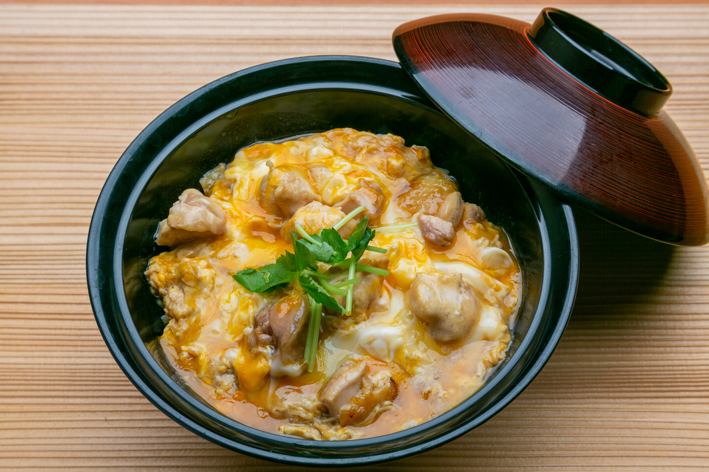

Oyakodon

Description:
Oyako Don, a classic Japanese comfort dish, consists of tender chicken and eggs
simmered in a savory-sweet broth made from dashi, soy sauce, mirin, and sugar.
The dish is served over a bowl of steaming white rice. Start by sautéing bite-sized pieces of chicken in the broth,
then pour beaten eggs over the mixture and gently cook until the eggs are just set.
Garnish with sliced green onions
and enjoy a simple yet flavorful meal!
Ingredients:
- 1 tablespoon olive oil
- 4 skinless, boneless chicken thighs, cut into small pieces
- 1 onion, cut in half and sliced
- 2 cups dashi stock, made with dashi powder
- ¼ cup soy sauce
- 3 tablespoons mirin (Japanese rice wine)
- 3 tablespoons brown sugar
- 4 large eggs
- 4 cups hot cooked white rice
Steps:
Step 1:
- Heat oil in a large skillet over medium heat. Add chicken and cook until beginning to brown, about 5 minutes. Add onion; cook and stir until onion is translucent, about 5 minutes.
Step 2:
- Pour in stock, then whisk in soy sauce, mirin, and brown sugar; stir until sugar dissolves. Bring to a boil, then lower heat and simmer until slightly reduced, about 10 minutes.
Step 3:
- Whisk eggs in a bowl until well-beaten, then pour into the hot stock mixture. Cover the skillet, reduce the heat, and steam until egg is cooked, about 5 minutes. Remove from the heat.
Step 4:
- Divide rice among 4 deep soup bowls and top with equal amounts of the soup mixture.